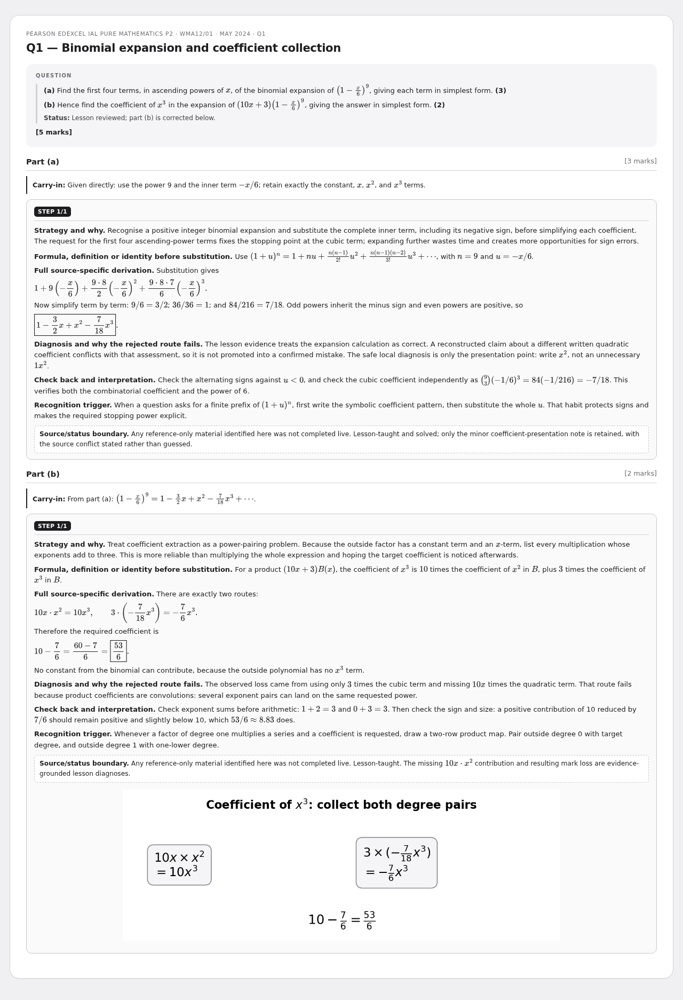
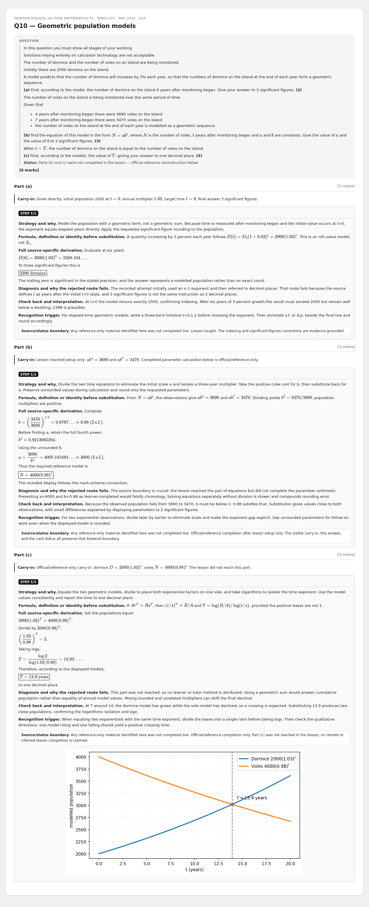
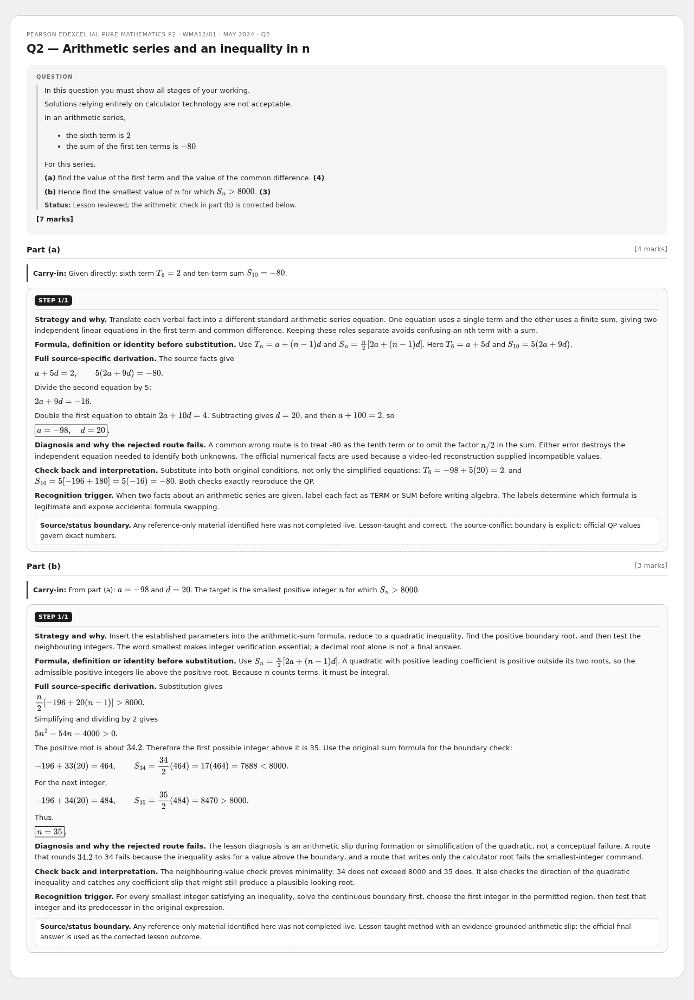
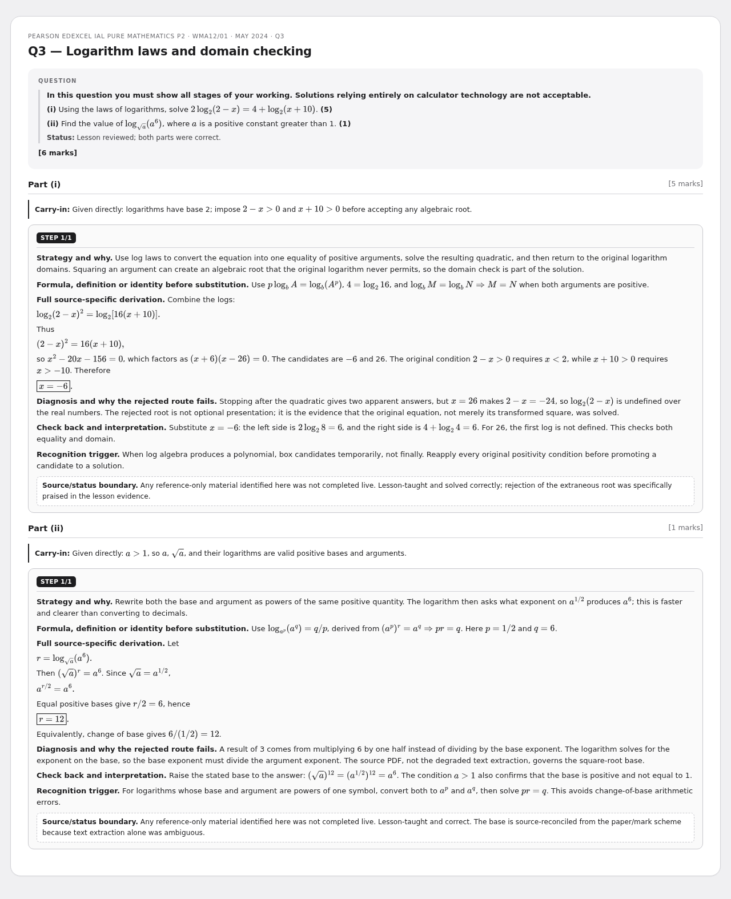
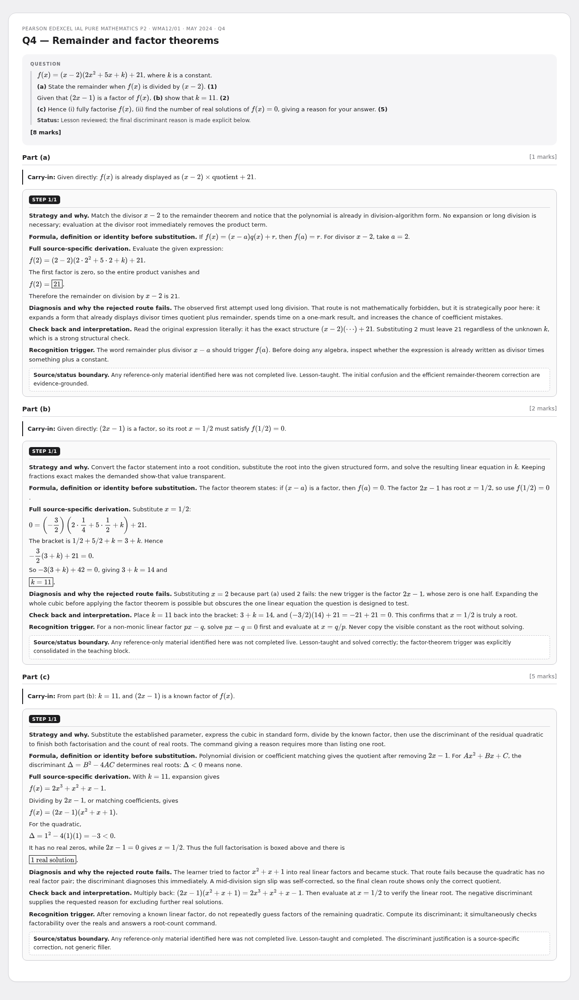
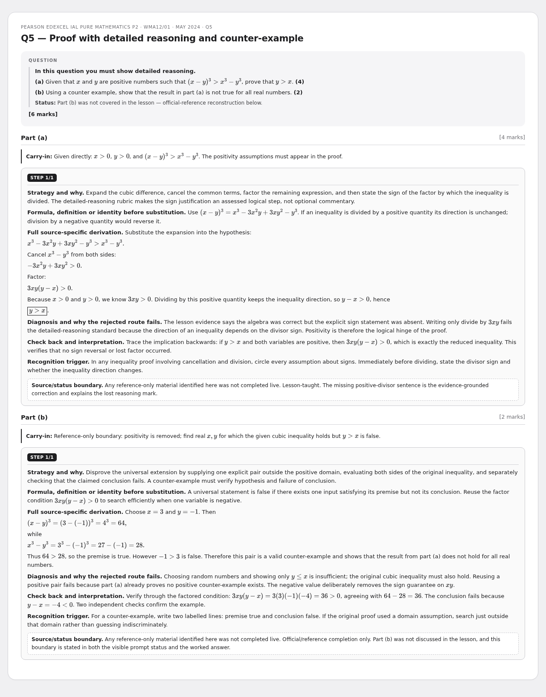
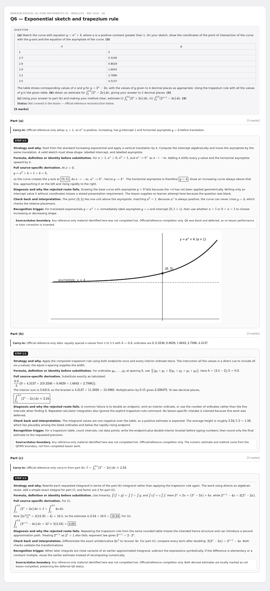
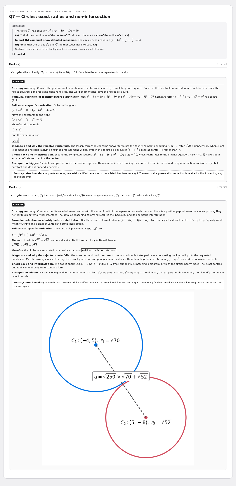
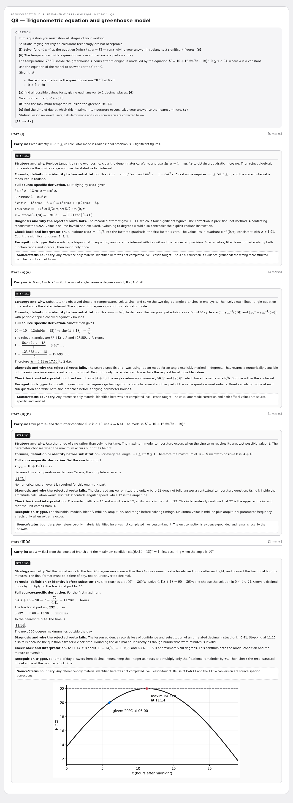
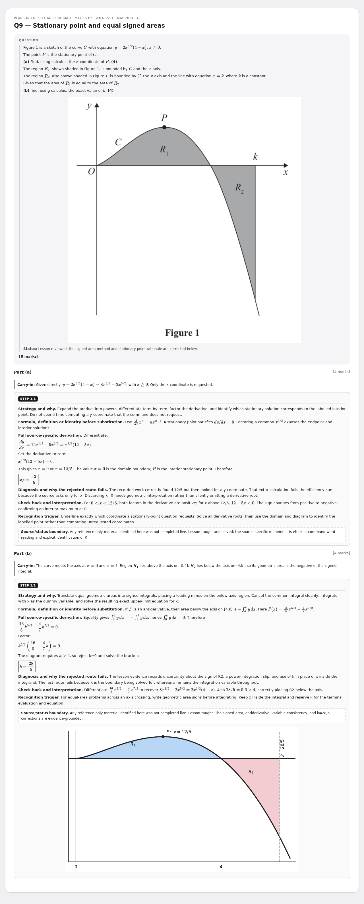

10 July - P2 May 2024 (WMA12/01)
Rebuilt multi-step cards - review preview. Not part of the live deck.
10 cardsWMA12/01May 2024P2
Q1 — Binomial expansion and coefficient collection

Q10 — Geometric population models

Q2 — Arithmetic series and an inequality in n

Q3 — Logarithm laws and domain checking

Q4 — Remainder and factor theorems

Q5 — Proof with detailed reasoning and counter-example

Q6 — Exponential sketch and trapezium rule

Q7 — Circles: exact radius and non-intersection

Q8 — Trigonometric equation and greenhouse model

Q9 — Stationary point and equal signed areas
